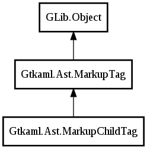

MarkupChildTag
Object Hierarchy:
Description:
MarkupChildTag is a MarkupTag that has itself a parent: parent_tag,
All known sub-classes:

Namespace: Gtkaml.Ast
Package: Gtkaml
MarkupChildTag is a MarkupTag that has itself a parent: parent_tag,